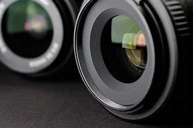

Digital Photography course for begineers to niche.


Digital photography is the process of using electronic and computing appliances to capture, create, edit and share digital images/photographs. It encompasses several different technologies to provide electronic or computer-based photography services.
It is mainly used as a means to create, publish or use digital photographs on computers and/or the Internet.
Typically, a digital photograph - the outcome of digital photography - is stored in a bitmap (BMP) format. However, it can vary from device/technology and per user requirements. It replaces standard photography's conventional microfilm with storage cards or computer storage devices to store/access a captured/scanned/copied image.
If you want to become a famous photographer and bask in the glory, the first aspect of photography you need to master is using a digital single-lens reflex camera. Let us presume you have already glanced into your new camera’s manual and learned what all those numerous buttons and levers do so that you are able to operate your device with ease: then you must be craving to take your first photo. To make it a masterpiece, let us follow several simple instructions.
1.Lens CapThough it may sound unnecessary for the first step, do not forget to take the protective cap off the lens. A solid part of photography is about capturing the right moment, and it is disappointing to miss one just because of your own carelessness. |
|
 |
2.FramingFind a solid frame. It is a matter of practice. For starters, try not to crop peoples’ heads or other body parts, and do not put objects right in the frame’s center. Leave some head space or your images will appear overloaded. |
3.Different ModeAdjust aperture, shutter speed, and ISO values. Or to make a process faster and easier, use A- or S-modes (‘aperture priority’ and ‘shutter priority’ modes respectively). The A-mode allows you to set the F-number (which influences the depth of field), while automatics take care of ISO and shutter speed. S-mode does the same for shutter speed, which affects whether the objects in your picture will be blurry or clear |
|
|  |
4.AutofocusLet your camera autofocus by pushing the release button halfway, and then slightly press it to the end to make a shot. If you shoot at nightfall, set shutter speed low and use a tripod to exclude image distortions caused by your hands’ shaking. If your camera cannot focus on its own (which often happens when it is dark outdoors) switch from auto to manual mode, and focus your lens on lights, or to the infinity. |
5.AdjustmentsDo not be afraid to post-process your photos. Digital photography grants you a wide variety of ways to improve your images’ quality, so feel free to use them—at least until you become a professional. At the same time, many professionals use Photoshop as well. Anyway, you may be surprised how simple saturation, contrast, or hue adjustments are able to make your images look much better. |
Take multiple shots. Hardened pros may follow the rule ‘One shot—one hit,’ but to do that you must take thousands of photos before. Taking several shots of one frame will give you an opportunity to choose the best among similar images. So, shoot, shoot, and shoot. Go to gallery to watch some dazzling photography.click here
1.Download a photo-editing application. There are plenty of free editing applications available in the Google Play Store on Android or App Store on iPhone and iPad. If you want to explore different styles, then download a few apps and play around with their effects. Examples include the following:
2.Open a photo editing app. After you download and install a photo editing app from the App Store or Google Play Store, tap the app on your home screen or apps menu to open the app.
3.Take a picture or select a photo. Most apps give you the option to either take a new picture (look for the button with the camera on it) or choose one from your photo library (Look for a plus "+" icon). You should see the photo in the center of the screen with options and icons at the top and/or bottom of the screen.
4.Choose a filter. Every app is different, but many of them, like Instagram, have a variety of "filters" or "lenses" to choose from, which essentially do all of the editing for you. Look for tabs or icons at the bottom or top of the photo preview to see what adjustments you can make with the app you are using. Most photo editing apps display filters as tiny thumbnail previews at the bottom of the screen. Tap a thumbnail image to see a preview of how it will affect your image. Look for slider bars or an icon with slider bars that you can use to adjust the intensity of the filter.
5.Adjust the exposure. In photography, exposure refers to the amount of light that falls on a photo. If the photo is too dark, then you might need to increase the exposure. If you want the photo darker, then lower the exposure.
6. Adjust the saturation. Some apps allow you to adjust the saturation, or intensity of color, in a photo. Increasing the saturation of a photo can make the colors pop and make the photo more eye-catching. Too much saturation, though, can make the photo look harsh and almost cartoon-like.
7.Crop the photo. Cropping a photo is a good way to add more focus on the subject in the image by cutting out some of the background in the image. The crop tool usually has an icon that resembles two right angles forming a square. To crop an image select the crop tool and then drag the corners of the image inward so that the light part of the image is centered around the subject in the image.
8.Every app is different, so if it is your first time using one, you might want to go through and check out all the different options for how to edit the photo.
If you want to editing like a pro please purchase our course Adobe Photoshop to enrich your knowledge and get a exclusive discount . Not only that you can access the course for lifetime and get a valid certificate that will help you to buid your career as a photographer.
To know more about photography please go to course.